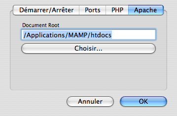

FAQ
Quelles sont les versions des programmes inclus ?
- Apache 2.0.63
- MySQL 5.1.37
- PHP 4.4.9 & 5.2.10
- APC 3.0.19 & APC 3.1.2
- eAccelerator 0.9.5.3
- XCache 1.2.2
- phpMyAdmin 2.11.9.5 & phpMyAdmin 3.2.0.1
- Zend Optimizer 3.3.3
- SQLiteManager 1.2.0
- Freetype 2.3.9
- t1lib 5.1.2
- curl 7.19.5
- jpeg 7
- libpng-1.2.38
- gd 2.0.34
- libxml 2.7.3
- libxslt 1.1.24
- gettext 0.17
- libidn 1.15
- iconv 1.13
- mcrypt 2.5.8
- YAZ 3.0.47 & PHP/YAZ 1.0.14
Comment puis-je changer le mot de passe de la base de données MySQL?
Ouvrez le Terminal et saisissez :/Applications/MAMP/Library/bin/mysqladmin -u root -p password <NEWPASSWORD>
Au lieu de <NEWPASSWORD> utilisez le nouveau mot de passe à affecter.
Après cela, vous devez aussi redéfinir le mot de passe MySQL pour phpMyAdmin et les autres scripts qui fonctionnent sous MAMP.
Pour phpMyAdmin, vous devez éditer le fichier /Applications/MAMP/bin/phpMyAdmin-X.X.X/config.inc.php
Où puis-je changer les ports pour Apache et MySql?
Vous pouvez changer les ports dans le programme MAMP en affichant les Préférences :
Where should I put my HTML and PHP pages?
By default, PHP and HTML Pages should be copied into the htdocs folder which is located under /Applications/MAMP. This folder is called "Document Root". You can change the path for the Document Root in the MAMP program under Preferences:

Pourquoi est-ce que MAMP me demande un mot de passe au lancement et à la fermeture ?
Vous avez probablement défini le port d'Apache à une valeur inférieure à 1024. Dans un système Unix, comme Mac OSX, vous devez posséder les droits d'administrateur (root) pour lancer des services IP dont les numéros de ports sont inférieurs à 1024.